서울바앤스피릿쇼는
힙한 주류 브랜드, 바텐더 매니아들이 함께 만들어가는
트렌디하고 독창적인 주류 전시회입니다.
위스키, 럼, 진, 보드카, 데킬라 등 다양한 증류주(Spirits)와
칵테일(Cocktail), 바 문화(Bar)에 특화된 비즈니스 플랫폼으로
다채로운 주류 시장에서
새로운 문화와 트렌드를 선도하고 있습니다.
| 행사명 | 제6회 서울바앤스피릿쇼 Seoul Bar & Spirits Show 2026 |
|---|---|
| 기간 | 2026년 7월 24일 (금) - 26일 (일) |
| 시간 |
7월 24일 (금) - 25일 (토) : 11:00 ~ 19:00 7월 26일 (일) : 11:00 ~ 18:00 |
| 장소 | 서울 코엑스 D홀 |